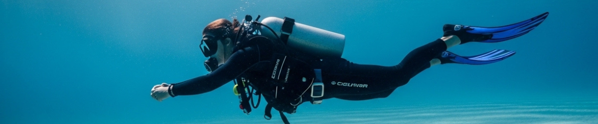
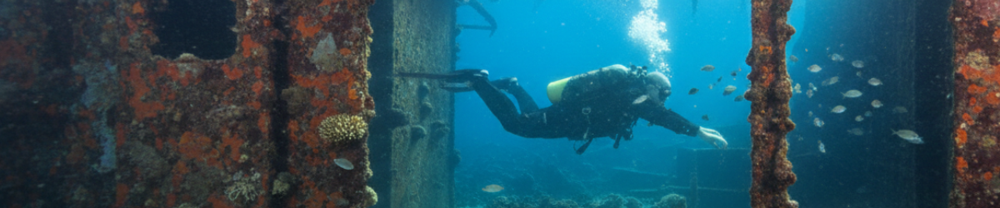

BUCEACONRAFA
Formación individualizada
(La Azohía - Murcia)
(La Azohía - Murcia)
Formación de buceo individualizada en La Azohía. Ratio máximo 2:1. Sin prisas, a tu ritmo.
Cada buceador tiene su ritmo. Mi trabajo es acompañarte desde tu primera respiración bajo el agua hasta inmersiones que la mayoría solo sueña. Elige el punto de partida que encaja contigo.

Una primera experiencia donde solo importan tu seguridad y tu comodidad.

Aprende a bucear y Construye una base solida desde el inicio.

profundiza en nuevos conocimientos y habilidades de buceo
En BUCEACONRAFA no se acelera el aprendizaje.
Construimos habilidades sólidas
desde la base. El control se aprende. La flotabilidad se domina. La seguridad no se negocia.
Practicamos en las aguas de la Azohía (Cabo Tiñoso). Sin corrientes, en un
mar
de aguas cristalinas.
No salimos al agua hasta que tienes el control. Cada habilidad se practica hasta que es tuya, no hasta que parece suficiente.
Máximo 2 alumnos por Curso. Siempre. Sin excepciones. Aqui no encontraras grupos de 8 personas.
Desde el primer día aprendes a configurar tu equipo correctamente. La metodología DIR no es solo una técnica — es una forma de pensar el buceo.
Avanzas cuando estás listo, no cuando el calendario lo marca. Aquí no existe la presión de «terminar el curso».
Aguas cristalinas, visibilidad excepcional y calma absoluta. El entorno donde el mar no interrumpe, sino que permite entrenar con precisión técnica.
La Azohía lleva décadas siendo el secreto mejor guardado del Mediterráneo levantino. Sus aguas no perdonan la mediocridad, pero recompensan con generosidad al buceador que aprende bien. Más de veinte metros de visibilidad, sin corrientes, con una profundidad que crece exactamente a tu ritmo.
Aquí tienes la Reserva Marina de Cabo Tiñoso —una joya protegida donde meros, dentones, barracudas, morenas y pulpos comparten el espacio con una posidonia intacta que pocos mares conservan así. El Arco, el Muellecico o Cala Cerrada son escenarios que los libros de texto no pueden copiar. Cada inmersión es una clase magistral.
Y junto a la Azohía, en Isla Plana vive la Cueva del Agua: lugar de peregrinación para buceadores avanzados de todo el mundo (hay mucho mito que gira entorno a ella incorrecta). De esas inmersiones que se cuentan entre cervezas y te quitan el sueño de la emoción.
Tu destino idóneo si vienes desde Madrid, Valencia o el
norte.
La Azohía no es solo el rincón favorito de los buceadores murcianos. Si estás planeando
un viaje de buceo al Mediterráneo para desconectar de la ciudad, te prometo que este enclave
es distinto al resto del litoral. Temperatura cálida todo el año, aguas protegidas y unos
fondos de una biodiversidad salvaje.
Más de 12 años buceando. Instructor recreativo certificado con especialización en buceo Full Cave. «La Cueva del Agua es mi lugar de paz al que voy cada semana para desconectar.»
Monté BuceaConRafa porque creía que había una forma distinta de enseñar. Sin grupos de diez personas. Mi objetivo es que adquieras los conocimientos y habilidades para practicar este deporte de manera segura y proactiva. En mis cursos estoy solo para ti.
«Sigo la filosofía del buceador consciente (DIR) y del diamante del buceador: si un buceador comprende la teoría (conocimiento) y practica las habilidades hasta dominarlas, él y su compañero jamás podrán tener un incidente de buceo porque han cubierto todas las variables posibles»

Cuéntame en qué punto estás y qué quieres conseguir. Te respondo en menos de 24 horas con una propuesta personalizada.
Descubre las rutas, profundidades y vida marina de La Azohía. Introduce tus datos para descargar la guía al instante.